Introdução
Informações básicas do projeto como nome e membros da equipe.
Informações Gerais
- Projeto:DESCONTROLE FINANCEIRO
- Repositório GitHub: Nosso repositório do Trabalho Interdiciplinar
- Membros da equipe:
Contexto
Detalhes sobre o espaço de problema, justificativas e os objetivos do projeto.
Problema
As dificuldades dos adultos em gerir seus gastos são uma realidade comum e preocupante. Sendo assim, muitas famílias lutam para equilibrar o orçamento, enfrentando desafios como dívidas acumuladas, falta de planejamento financeiro e dificuldade em poupar para emergências ou objetivos de longo prazo. Desse modo, de acordo com uma pesquisa feita pelo Estadão, 52% dos entrevistados não possuem ou não sabem como montar um planejamento financeiro para os próximos anos. Além disso, 46% disseram que não se sentem confiantes para estabelecer metas de longo prazo. Logo, o desconhecimento sobre tal área faz com que eles tomem decisões precipitadas e crie uma sensação de descontrole sobre as finanças pessoais. Por conseguinte, essa falta de gestão de gastos pode acarretar em dificuldades para alcançar metas, como a compra de uma casa própria ou de uma viagem no final do ano. Diante disso, é nítido que é de extrema importância promover a educação financeira, auxiliando os adultos a tomarem decisões conscientes e mais responsáveis em relação ao dinheiro.
Objetivos
O objetivo deste projeto é conscientizar os adultos sobre a importância do controle financeiro e fornecer-lhes ferramentas e recursos para melhorar o seu planejamento mensal. Nesse viés, através de um aplicativo, buscamos educar as pessoas sobre como criar e manter um orçamento, compreender os riscos do endividamento excessivo e desenvolver hábitos financeiros saudáveis para o futuro. Além disso, o projeto visa oferecer orientações práticas sobre economia, investimentos e planejamento de metas financeiras de longo prazo, fazendo com que as pessoas tenham uma saúde financeira muito mais estável.
Justificativa
A relevância desse tema é evidente diante dos inúmeros desafios enfrentados pelos adultos no gerenciamento de seus gastos. Ademais, a falta de educação financeira adequada, somada às pressões sociais e econômicas, contribui para a perpetuação do ciclo de dificuldades financeiras. Sendo assim, é fundamental abordar essa questão e oferecer apoio aos adultos, ajudando-os a adquirir as habilidades necessárias para equilibrar as suas finanças e mapear os seus gastos. Nessa perspectiva, ao capacitá-los a gerir melhor as suas despesas, podemos contribuir para o bem-estar financeiro das famílias, para uma sociedade menos endividada e com sonhos mais próximos de serem concretizados. Por fim, a partir da análise de uma publicação feita pela Awary, entende-se que através do planejamento estratégico, você pode organizar suas finanças, definir metas e tomar decisões inteligentes sobre seu dinheiro. Não importa qual seja sua situação financeira atual, começar a planejar é essencial para construir um futuro financeiramente estável e garantir a tranquilidade em todos os aspectos da sua vida. Invista seu tempo e energia em estabelecer um planejamento financeiro sólido e aproveite todos os benefícios que ele pode proporcionar.
Público-alvo
O público-alvo deste projeto são os adultos e responsáveis familiares que enfrentam dificuldades em gerenciar seus gastos. Isso inclui adultos de todas as faixas etárias que buscam orientação e suporte para melhorar sua saúde financeira e proporcionar um ambiente financeiramente estável para suas famílias.
Concepção (Design Thinking)
Detalhes do processo de discovery do projeto.
Apresente o processo de discovery do projeto. Com foco na experiência do usuário, esse processo abrange a compreensão do contexto do problema e das características do usuário, a definição do problema, a geração de ideias, a prototipagem e a elaboração de uma proposta de solução
Processo de Design Thinking
O arquivo que se segue apresenta o resultado desse processo.
Apresente o processo de Design Thinking realizado pelo grupo e documentado por meio do software Miro. No documento apresentado, devem ser incluídos: (1) a matriz CSD, (2) o mapa de stakeholders, (3) as personas, (4) as respectivas propostas de valor e (5) o processo de ideação identificando as ideias levantadas e sua priorização.
Especificações do Projeto
Documentação das especificações do projeto.
Apresente as especificações do projeto, incluindo as histórias de usuário e os requisitos funcionais e não funcionais.
Histórias de Usuários
Com base na análise das personas foram identificadas as seguintes histórias de usuários:
Apresente aqui as histórias de usuário que são relevantes para o projeto de sua solução. As Histórias de Usuário consistem em uma ferramenta poderosa para a compreensão e elicitação dos requisitos funcionais e não funcionais da sua aplicação. Se possível, agrupe as histórias de usuário por contexto, para facilitar consultas recorrentes à essa parte do documento.
EU COMO...PERSONA |
QUERO/PRECISO...FUNCIONALIDADE |
PARA...MOTIVO/VALOR |
|---|---|---|
| Usuário do sistema | Registrar as minhas despesas | Para mapear os meus gastos |
| Usuário do sistema | Notificações de contas a pagar | Para que eu não se esqueça delas e acumule dívidas |
| Usuário do sistema | Criação de metas | Para conseguir acompanhar as evoluções |
Requisitos
As tabelas que se seguem apresentam os requisitos funcionais e não funcionais que detalham o escopo do projeto.
Com base nas Histórias de Usuário, enumere os requisitos da sua solução. Classifique esses requisitos em dois grupos:
- Requisitos Funcionais (RF): correspondem a uma funcionalidade que deve estar presente na plataforma (ex: cadastro de usuário).
- Requisitos Não Funcionais (RNF): correspondem a uma característica técnica, seja de usabilidade, desempenho, confiabilidade, segurança ou outro (ex: suporte a dispositivos iOS e Android).
Lembre-se que cada requisito deve corresponder à uma e somente uma característica alvo da sua solução. Além disso, certifique-se de que todos os aspectos capturados nas Histórias de Usuário foram cobertos.
Requisitos Funcionais
| ID | Descrição do Requisito | Prioridade |
|---|---|---|
| RF-001 | Registro de despesas e receitas | ALTA |
| RF-002 | Registro de contas a pagar | MÉDIA |
| RF-003 | Relatórios mensais | ALTA |
| RF-004 | Alertas e notificações | MÉDIA |
| RF-005 | Definição de metas | ALTA |
| RF-006 | Suporte ao cliente | ALTA |
Requisitos Não-Funcionais
| ID | Descrição do Requisito | Prioridade |
|---|---|---|
| RNF-002 | É fundamental garantir a segurança e a privacidade dos dados financeiros dos usuários | ALTA |
Projeto de Interface
Artefatos relacionados com a interface e a interacão do usuário na proposta de solução.
Apresente a ideia de interface que está sendo prevista para o projeto. Inclua os wireframes, o user/screen flow e o protótipo interativo.
User/Screen Flow e Protótipo interativo
Artefatos relacionados com a interface e a interacão do usuário na solução proposta.
O fluxo de usuário (User Flow) é uma técnica que permite ao desenvolvedor mapear todo fluxo de telas do site ou app. Essa técnica funciona para alinhar os caminhos e as possíveis ações que o usuário pode fazer junto com os membros de sua equipe. 
Um protótipo interativo apresenta o projeto de interfaces e permite ao usuário navegar pelas funcionalidades como se estivesse lidando com o software pronto. Veja o exemplo a seguir.

Wireframes
Protótipo de telas do sistema em baixa fidelidade (rascunhos).
Os Wireframes são protótipos das telas da aplicação usados em design de interface para sugerir a estrutura de um site web e seu relacionamentos entre suas páginas. Um wireframe web é uma ilustração semelhante ao layout de elementos fundamentais na interface. 
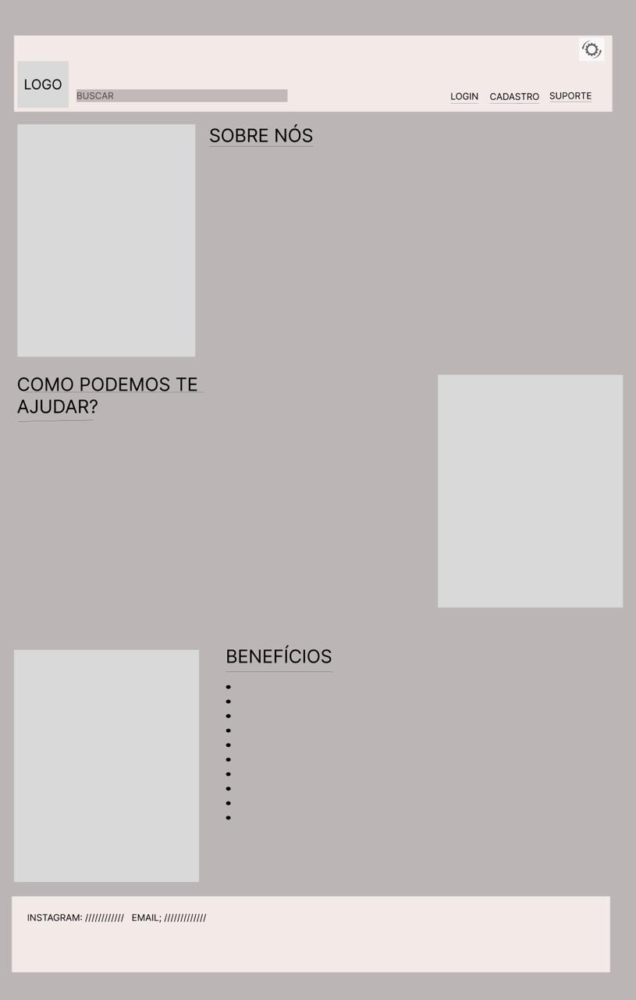 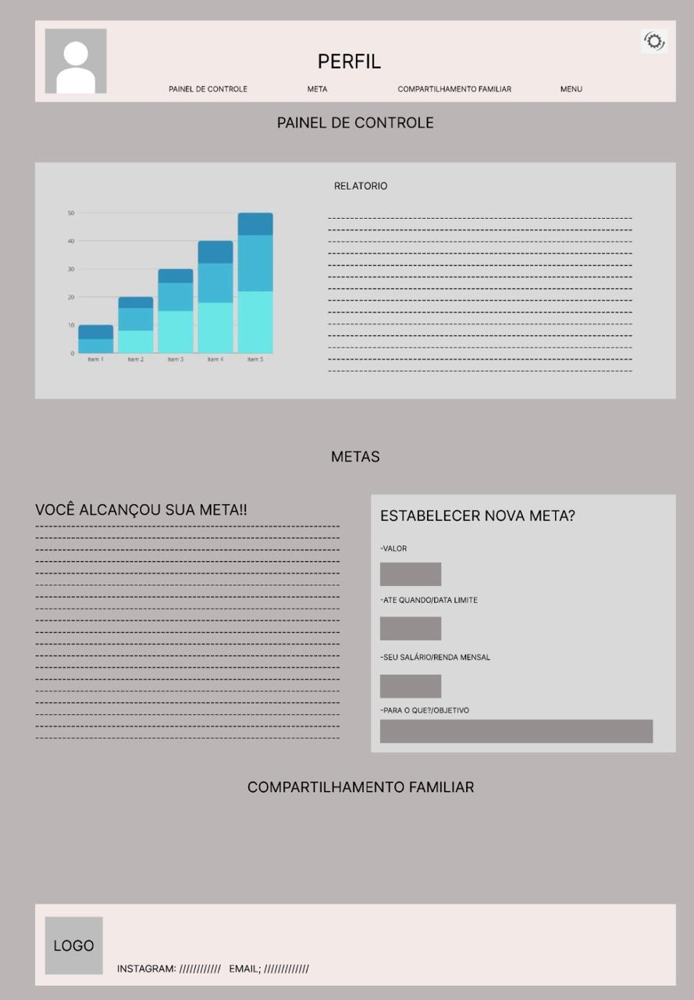 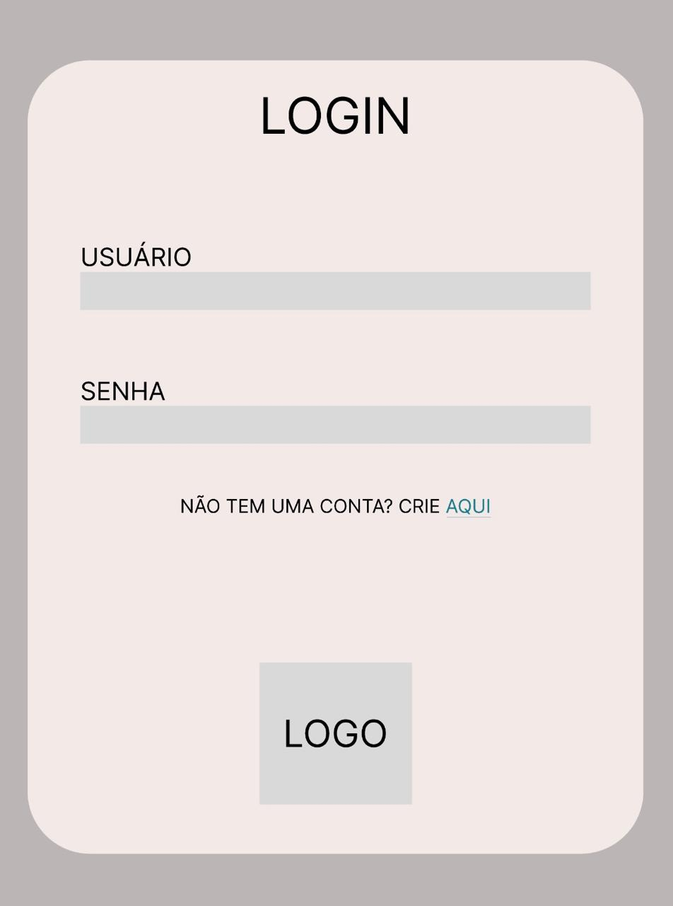 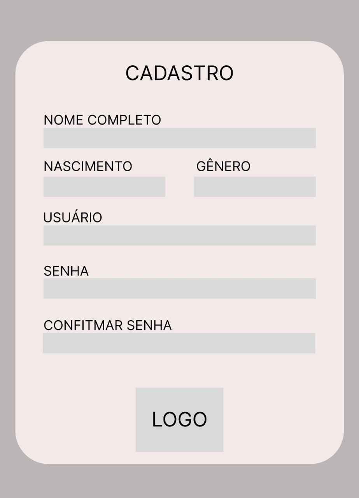 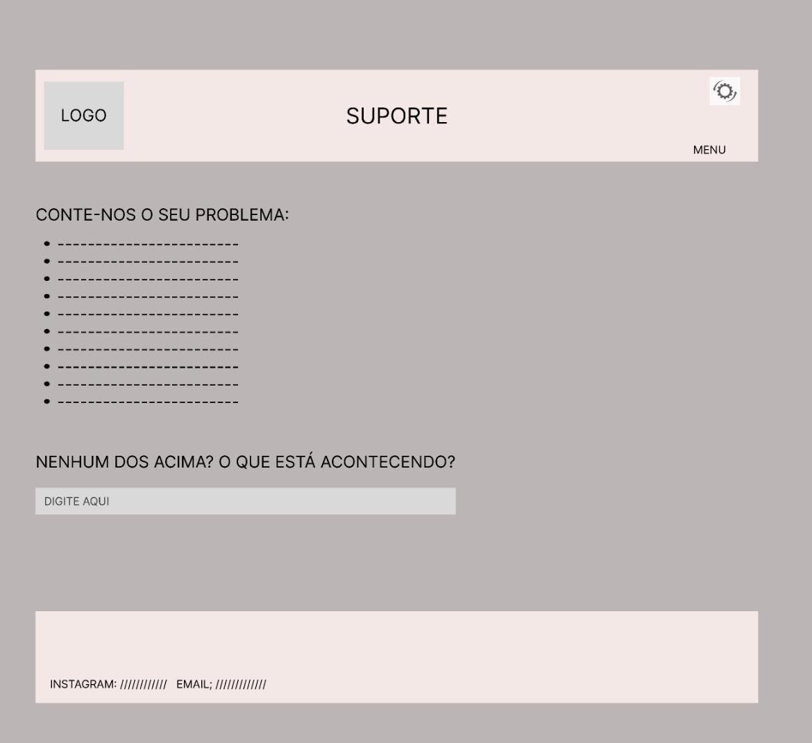
Metodologia
Detalhes sobre a organização do grupo e o ferramental empregado.
Nesta parte do documento, você deve apresentar a metodologia adotada pelo grupo, descrevendo o processo de trabalho baseado nas metodologias ágeis, a divisão de papéis e tarefas, as ferramentas empregadas e como foi realizada agestão de configuração do projeto via GitHub.
Coloque detalhes sobre o processo de Design Thinking e a implementação do Framework Scrum seguido pelo grupo. O grupo poderá fazer uso de ferramentas on-line para acompanhar o andamento do projeto, a execução das tarefas e o status de desenvolvimento da solução.
O grupo optou por uma estratégia que valoriza a colaboração, adotando metodologias ágeis como o Design Thinking e o Scrum para orientar o processo de criação e execução do projeto. O Design Thinking facilitou a compreensão profunda das necessidades do usuário, resultando em soluções sob medida para atender a essas demandas específicas. Por sua vez, o Scrum proporcionou uma estrutura organizacional que ajudou na gestão eficiente das atividades e no planejamento das etapas de desenvolvimento. A alocação de responsabilidades e tarefas foi feita de maneira participativa, por meio de encontros semanais nos quais os membros colaboraram para definir seus papéis. O uso de plataformas online, como o Ummense, possibilitou um acompanhamento em tempo real do progresso do projeto, das tarefas em andamento e do estado geral da solução em desenvolvimento. Em suma, a adoção de uma abordagem baseada em metodologias ágeis, a aplicação do Design Thinking e do Scrum e a distribuição colaborativa de responsabilidades foram elementos essenciais para o êxito do projeto
Ferramentas
Relação de ferramentas empregadas pelo grupo durante o projeto.
Liste as ferramentas empregadas no desenvolvimento do projeto, justificando a escolha delas, sempre que possível. Inclua itens como: (1) Editor de código, ferramentas de comunicação, ferramentas de diagramação, plataformas de hospedagem, entre outras.
| Ambiente | Plataforma | Link de Acesso |
|---|---|---|
| Processo de Design Thinking | Miro | MIRO |
| Repositório de código | GitHub | GitHub |
| Fluxo de trabalho | Trello | Trello |
| Protótipo Interativo | Figma | Figma |
Gestão do Projeto
Divisão de papéis no grupo e apresentação da estrutura da ferramenta de controle de tarefas (Kanban).
Apresente a divisão de papéis e tarefas entre os membros do grupo. Informe quem é o Scrum Master, o Product Owner e os desenvolvedores. Informe também quem é o responsável pela documentação do projeto.
Apresente o quadro de gerenciamento do time (Kanban), seu formato e as experiências na utilização dessa ferramenta (GitHub Projects)
Ogrupo optou por uma estratégia que valoriza a flexibilidade e a colaboração, adotando metodologias ágeis como o Design Thinking e o Scrum para orientar o processo de criação e execução do projeto. O Design Thinking facilitou a compreensão profunda das necessidades do usuário, resultando em soluções sob medida para atender a essas demandas específicas. Por sua vez, o Scrum proporcionou uma estrutura organizacional que ajudou na gestão eficiente das atividades e no planejamento das etapas de desenvolvimento. A alocação de responsabilidades e tarefas foi feita de maneira participativa, por meio de encontros semanais nos quais os membros colaboraram para definir seus papéis. O uso de plataformas online, como o Trello, possibilitou um acompanhamento em tempo real do progresso do projeto, das tarefas em andamento e do estado geral da solução em desenvolvimento. Em suma, a adoção de uma abordagem baseada em metodologias ágeis, a aplicação do Design Thinking e do Scrum e a distribuição colaborativa de responsabilidades foram elementos essenciais para o êxito do projeto
Agestão do projeto e divisão das tarefas foi feita de maneira coletiva, explorando as melhores habilidades de cada participante. Dessa forma, foi designada cada tarefa específica para o indivíduo que tinha mais familiaridade com o assunto. Sendo assim, durante o desenvolvimento do projeto, a distribuição de tarefas ficou da seguinte maneira:
SPRINT 1
- Alice = ficou responsável por liderar a parte de apresentação do projeto
- Arthur = ficou responsável por fazer o controle de versão no GitHub
- Beatriz = ficou responsável por comandar as etapas de Desing Thinking
- Eduardo = ficou responsável por fazer o fluxo de usuários, wireframes e protótipo interativo
- Felipe = ficou responsável por fazer a documentação do projeto
SPRINT 2 E 3
Durante as sprints cada participante ficou encarregado de desenvolver as próprias funcionalidades
- Alice =Notificações e calendário
- Arthur = Contas pendentes e calculadora de investimentos
- Beatriz = Cadastro de ganhos e despesas e apresentação de tutoriais de investimento
- Eduardo =Painel de controle e cadastro de metas
- Felipe = Suporte e calculadora de poupança
SPRINT 4
Todos os participantes ajudaram na parte de juntar as funcionalidades e ajustá-las para a apresentação final
- Alice =Slides de apresentação
- Arthur = Documentação
- Beatriz = Vídeo de apresentação
- Eduardo =Edição do vídeo
- Felipe = Documentação
Vale ressaltar que todos os alunos fizeram parte de todas essas etapas do projeto, mas cada um tinha o seu foco principal
Aqui está o nosso Kanban: Quadro de Tarefas
- Scrum Master = Arthur
- Product Owner = Beatriz
- Desenvolvedores = Alice, Eduardo e Felipe
Controle de Versão
Estrutura do fluxo de trabalho no ambiente do GitHub.
Discuta como a configuração do projeto foi feita na ferramenta de versionamento (GitHub). Exponha como a gerência de tags, merges, commits e branchs é realizada. Discuta como a gerência de issues foi realizada.

Para fazer o controle de versão foi utilizado o Git, uma ferramenta muito usada na área de tecnologia e desenvolvimento de software. Sendo assim, é possível ter diferentes versões do código fonte ao mesmo tempo e mesmo assim é possível aplicar as modificações de maneira segura. Logo, foram utilizados alguns comandos para manter essa versão do código, como:
- Git branch = possibilita criar e gerenciar branchs
- Git checkout = posssibilita alterar entre as diferentes branchs
- Git merge = possibilita incorporar mudanças de um branch em outro
- Git push = possibilita enviar as alterações locais para um repositório remoto
- Git pull = permite atualizar local com alterações do repositório remoto
Além do Git, outra tecnologia utilizada para fazer o versionamento do código foi o aplicativo GitHub Desktop.
Solução
Esta seção apresenta todos os detalhes da solução criada no projeto.
Apresente cada uma das funcionalidades que a aplicação fornece tanto para os usuários quanto aos administradores da solução.
Inclua, para cada funcionalidade, itens como: (1) titulos e descrição da funcionalidade; (2) Estrutura de dados associada; (3) o detalhe sobre as instruções de acesso e uso.
Video do Projeto
O vídeo a seguir traz uma apresentação do problema que a equipe está tratando e a proposta de solução.
O video de apresentação é voltado para que o público externo possa conhecer a solução. O formato é livre, sendo importante que seja apresentado o problema e a solução numa linguagem descomplicada e direta.
Utilize o recurso de compartilhamento via embed e inclua o vídeo logo abaixo.
Funcionalidades
Esta seção apresenta as funcionalidades da solução.
Apresente cada uma das funcionalidades que a aplicação fornece tanto para os usuários quanto aos administradores da solução.
Inclua, para cada funcionalidade, itens como: (1) titulos e descrição da funcionalidade; (2) Estrutura de dados associada; (3) o detalhe sobre as instruções de acesso e uso.
Funcionalidade 1 - Notificações
Uma aba que transmite notificações para usuarios com relação a suas pendencias financeiras.
- Instruções de acesso:
- Abra o site e acesse a aba de notificações
- Já tendo aberto página, há a presença de cards mostrando os pagamentos que ainda não foram efetuados e se venceu ou não

Funcionalidade 2 - Calendário
Um calendário digital que mostra as datas de pagamentos a serem feitos
- Instruções de acesso:
- Abra o site e acesse a aba de calendário
- Já tendo aberto a página, há um calendario que mostrará os dias em que vence uma conta
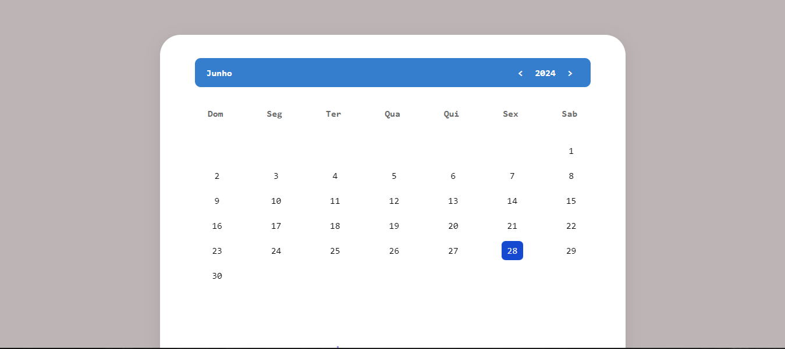
Funcionalidade 3 - Contas a pagar
Permite o cadastro de contas, seu tipo, valor e vencimento
- Instruções de acesso:
- Abra o site e acesse a aba contas a pagar
- Já tendo aberto a página, há blocos em que o usuário deve inserir informações da conta, sendo elas, tipo, vencimento, valor e descrição
- Em seguida, aperte para cadastrar a conta, após isso será gerado a conta com suas devidas informações
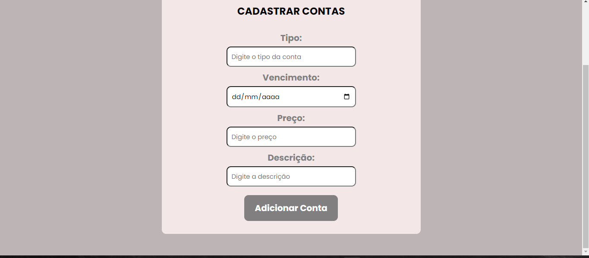
Funcionalidade 4 - Calculadora de investimentos
Permite a simulação de investmentos
- Instruções de acesso:
- Abra o site eacesse a aba simulação
- Já tendo aberto a página, há blocos em que o usuário deve inserir o nome, aporte inicial, investimento mensal, rendimento anual e tempo de contribuição
- Em seguida, escolha simular que será gerado uma resposta da quantia ocasionada pelo investimento
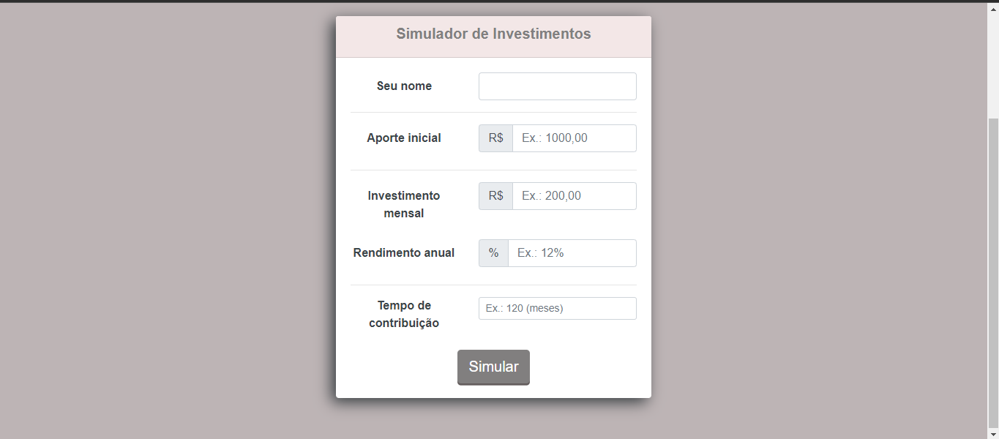
Funcionalidade 5 - Cadastro de ganhos e despesas
Permite a inserção de despesas e lucros do usuário de forma a relacionar os gastos e lucros
- Instruções de acesso:
- Abra o site e acesse a aba de Despesas e Receitas
- Já tendo aberto a página, há blocos em que o usuário deve inserir o valor das despesas e seus ganhos, comentários do porque há essa despesa
- Em seguida, após o preenchimento, será dado medidas que podem ajudar no controle desses gastos e a relçao entre o gasto e o lucro mensal
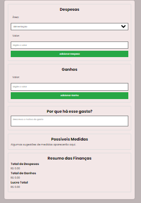
Funcionalidade 6 - investimentos
Permite o estudo, por meio de videos e artigos disponibilizados no próprio site, sobre investimetnos
- Instruções de acesso:
- Abra o site e acesse a aba investimentos
- Já tendo aberto a aba, há diversos artigos e videos sobre conteudos relacionadosa investimentos promovendo aprendizado e maior conhecimento da gestão financeira
- Em seguida, preencha os campos de vizualição confirmando o acesso ao artigo e/ou video
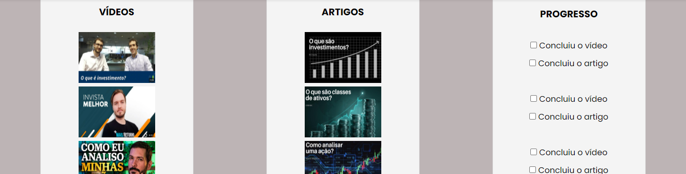
Funcionalidade 7 - Cadastro de Metas
Permite a criação de metas financeiras
- Instruções de acesso:
- Abra o site e acesse a aba de painel de controle
- Já tendo aberto a aba, procure a seção de metas, nela, há a opcão de inserir uma nova meta com um valor x
- Em seguida, o usuario consegue inserir valores para acompanhar sua meta
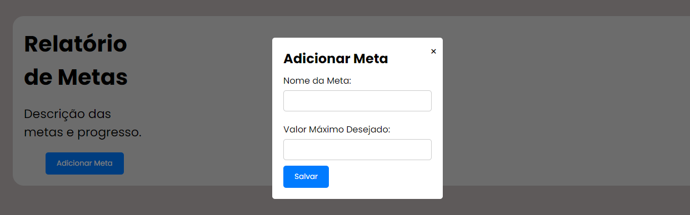
Funcionalidade 8 - Relatórios
Fornece um relatório mensal sobre o lucro e despesas
- Instruções de acesso:
- Abra o site e acesse a aba de painel de controle
- Já tendo aberto a aba, procure a seção de relatório, nela há a opção de selecionar o mês e a semana desejada
- Em seguida, será gerado um gráfico dizendo a respeito do dinheiro movimentado no período em questão
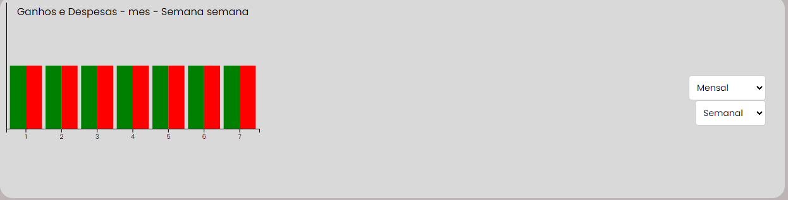
Funcionalidade 9 - Suporte
Permite que o usuário sane suas dúvidas a respeito do funcionamento do site
- Instruções de acesso:
- Abra o site e acesse a aba de suporte
- Já tendo aberto a aba, o usuário encontrará problemas comuns e suas resoluções, assim o usúario poderá avaliar se a explicação foi útil ou não
- Caso nenhuma das dúvidas padrões sejam utéis o usuario consegue digitar o que está acontecendo de forma que encontre uma solução mais específica
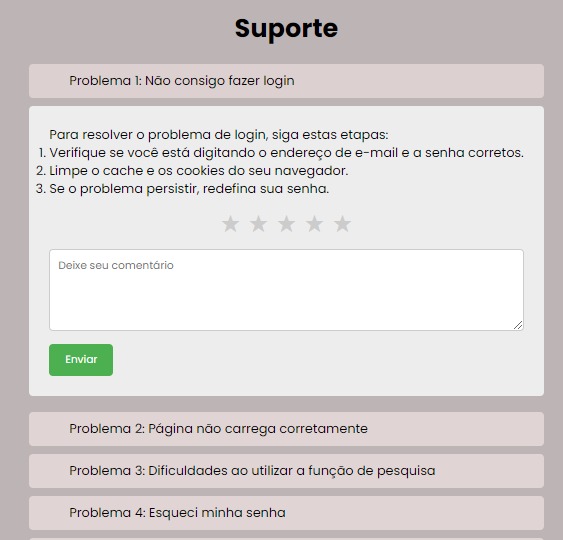
Funcionalidade 10 - Calculadora de poupança
Permite que o usuário consiga alcançar um valor para poupar todo mês a fim de possuir uma quantia
- Instruções de acesso:
- Abra o site e acesse a aba de poupar
- Já tendo a aberta a aba, haverá blocos em que o usuário pode inserir um objetivo e número de meses para cumprir esse objetivo
- Em seguida, será possivel sumular, assim, o site fornecerá uma quantia a ser poupada mensalmente para alcançar o objetivo
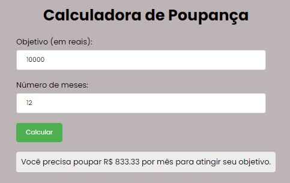
Estruturas de Dados
Descrição das estruturas de dados utilizadas na solução com exemplos no formato JSON.
Apresente as estruturas de dados utilizadas na solução tanto para dados utilizados na essência da aplicação quanto outras estruturas que foram criadas para algum tipo de configuração
Nomeie a estrutura, coloque uma descrição sucinta e apresente um exemplo em formato JSON.
Estrutura de Dados - Notificações
Contatos da aplicação
{
"painel_alerta": {
"alertas": [
{
"tipo": "Vencimento/Lembrete",
"descrição": "Fatura do cartão de crédito/aluguel/transporte",
"data_vencimento": "2024-04-30",
"valor": 150.00,
"urgencia": "Alta/Média/Baixa"
}
]
}
}
Estrutura de Dados - Calendario
{
"calendar": { "2024-05-01": {
"note": "Reunião com a equipe" },
"2024-05-02": {
"note": "Dentista às 15h"
},
"2024-05-03": {
"note": "...."
}, }
}
Estrutura de Dados - Contas a pagar
{
"ordenacao": "limite_mais_proximo",
"contas": [
{
"nome": "Conta de luz",
"preco": 120.00,
"limite": "15 / 05 / 2024"
},
{
"nome": "Boleto da escola",
"preco": 1900.99,
"limite": "20 / 05 / 2024"
},
{
"nome": "Parcela do carro",
"preco": 2300.25,
"limite": "12 / 06 / 2024"
},
{
"nome": "Parcela do Playstation",
"preco": 234.00,
"limite": "18 / 06 / 2024"
}
]
}
{
“contas” : [
{
“nome” : “Conta de luz”,
“valor” : “120.00”,
“limite” : “02 / 12 / 2005”
}
}
Trabalho Interdisciplinar – ICEI PUC Mina
Estrutura de Dados - Calculadora de Investimentos
{
"simulacoes": [
{
"id": 1,
"nome": "Pedro",
"aporteInicial": 10000000.00,
"investimentoMensal": 10000000.00,
"rendimentoAnual": 12,
"tempoContribuicao": 120
}
]
}
Estrutura de Dados - Cadastro de ganhos e despesas
"despesas": [
{
"categoria": "...",
"valor": x
},
],
"ganhos": {
"mensal": x
},
"justificativa_gastos": [
{
"categoria": "...",
"justificativa": "..."
},
{
],
"possiveis_medidas_economia": [
"...."
]
}
Estrutura de Dados - Investimentos
{
“id”:1,
“vídeo”: “…”,
“título”: “…”,
“url”: “…”,
“artigo”: “…”,
“progresso”: visto/não visto.
}
Estrutura de Dados - Cadastro de Metas
{
"id": 1,
"descricao": "Economizar para a viagem",
"valorMaximo": 5000,
"valorAtual": 0,
"dataCriacao": "2024-06-30",
"dataConclusao": null,
"concluida": false
}
Estrutura de Dados - Relatórios
const financialSummary = {
totalReceitas: [
{ month: 'Janeiro', amount: 5000 },
{ month: 'Fevereiro', amount: 4500 },
{ month: 'Março', amount: 6000 },
{ month: 'Abril', amount: 7000 },
],
totalDespesas: [
{ month: 'Janeiro', amount: 3000 },
{ month: 'Fevereiro', amount: 3200 },
{ month: 'Março', amount: 2800 },
{ month: 'Abril', amount: 3500 },
]
};
Estrutura de Dados - Suporte
{
"pagina_de_suporte": {
"header": {
"titulo": "Suporte",
"botao_menu": true
},
"conteudo": {
"problemas": [
{
"titulo": "Problema 1",
"descricao": "Descrição do Problema 1...",
"status": "Em Andamento"
},
{
"titulo": "Problema 2",
"descricao": "Descrição do Problema 2...",
"status": "Resolvido"
},
],
"novo_problema": {
"titulo": "Reportar um Novo Problema",
"descricao": "Descreva o seu problema...",
"hora": "13:45, 29 de Abril de 2024",
"enviar": "Enviar"
}
}
}
}
Estrutura de Dados - Calculadora de Poupança
{
"calculadora_de_poupanca": {
"quantia_por_mes": {
"label": "Quantia a ser armazenada por mês",
"type": "input",
"input_type": "text",
"placeholder": "Digite a quantia"
},
"quantos_meses": {
"label": "Quantos meses?",
"type": "input",
"input_type": "text",
"placeholder": "Digite o número de meses"
},
"calcular": {
"type": "button",
"text": "Calcular"
}
}
}
Módulos e APIs
Esta seção apresenta os módulos e APIs utilizados na solução.
Apresente os módulos e APIs utilizados no desenvolvimento da solução. Inclua itens como: (1) Frameworks, bibliotecas, módulos, etc. utilizados no desenvolvimento da solução; (2) APIs utilizadas para acesso a dados, serviços, etc.
Images:
- Unsplash - https://unsplash.com/
Fonts:
- Fontes Google API - https://fonts.googleapis.com
Scripts:
- jQuery - http://www.jquery.com/
- Bootstrap 4 - http://getbootstrap.com/
FAQ
Perguntas e respostas comuns associadas ao projeto.
Apresente uma lista de perguntas e respostas comuns associadas ao projeto. Inclua perguntas como: (1) detalhes de acesso e uso do projeto; (2) informações sobre a instalação e configuração da aplicação; (3) questões sobre a manutenção da aplicação; (4) detalhes sobre a integração da aplicação com outros sistemas; (5) questões sobre a segurança da aplicação.
Referências Bibliográficas
Esta seção apresenta as referências bibliográficas utilizadas no projeto.
Apresente as referências bibliográficas utilizadas no projeto. Inclua itens como: (1) livros, artigos, tutoriais, etc. utilizados no desenvolvimento da solução; (2) links para sites, blogs, etc. utilizados no desenvolvimento da solução.
TARVER,Jordan. Financial Planning Bases. Forbes,2022. Disponível em: https://www.forbes.com/advisor/investing/financial-advisor/financial-planning. Acesso em:16 abr. 2024.
ROCHA,Daniel. Por que metade dos brasileiros não consegue se planejar para o futuro. Estadão, 2022. Disponível em: https://einvestidor.estadao.com.br/educacao-financeira/brasileiros-planejamento-financeiro-pesquisa. Acesso em: 15 abr. 2024.
A importância do planejamento financeiro:Benefícios. Awari,2023. Disponivel em: https://awari.com.br/importancia-do-planejamento-financeiro-beneficios/?utm_source=blog&utm_campaign=projeto+blog&utm_medium=Import%C3%A2ncia%20do%20planejamento%20financeiro:%20Benef%C3%ADcios. Acesso em: 15 abr. 2024.